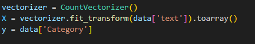
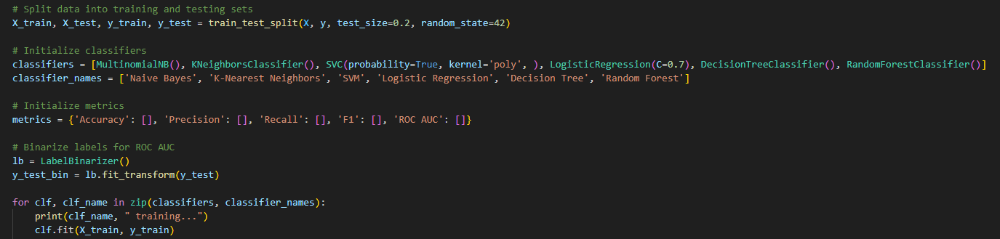

Introduction
In the digital age, spam emails have become an unavoidable nuisance, accounting for a significant portion of all emails received. With the escalating volume of spam, manual analysis and filtering is no longer feasible, necessitating automated solutions. Machine Learning, with its ability to learn and adapt from data, offers a promising avenue for addressing this issue more efficiently.
Machine learning algorithms can be trained to accurately categorize emails as spam or legitimate, based on patterns and features identified in the data. These algorithms analyze various elements of an email, such as the subject line, content, sender's details, and attached links, to determine its legitimacy.
The types of spam emails are diverse, ranging from harmless advertisements to dangerous phishing or fraudulent messages. The latter can pose serious threats, from spreading malware to stealing sensitive information. Therefore, the importance of effective spam filters extends beyond mere convenience to encompass security aspects as well
Among the myriad of techniques available in the field of machine learning, this project has opted to utilize supervised learning algorithms. Supervised learning is a type of machine learning where models are trained using labeled data. In this context, "labeled" means that each example in the training dataset is paired with a corresponding output or "label".
Supervised learning algorithms are designed to learn by example. When training a supervised learning model, the algorithm is provided with a set of example inputs along with their corresponding outputs. The model learns by comparing its predicted output with the actual output. Over time, the model improves and is able to make predictions or decisions based on the learned patterns.
In the illustration below, you can see a visualization of the supervised learning process:
Data Preprocessing
The dataset used is Kaggle, which contains email messages and their corresponding categories.
The preprocessing steps include:
- Dropping undefined and duplicate values
- Removing punctuation and numerical characters from the text
- Converting the text to lower case
- Tokenizing the text (breaking down the text into individual words)
- Removing English stop words (common words like 'the', 'is', 'and', etc. that do not contribute much to the meaning of the text)
Feature Extraction
Text Vectorization Process
The cleaned text is then vectorized using the CountVectorizer from the sklearn.feature_extraction.text module. This process converts the text into numerical feature vectors that can be used by the machine learning models. The output variable is 'Category', which indicates whether an email is 'spam' or 'ham'.
Model Training
The data is split into training and testing sets, with 80% of the data used for training the models and 20% reserved for testing. Six different classifiers are used:
- Multinomial Naive Bayes
- K-Nearest Neighbors
- Support Vector Machine (SVM) with a polynomial kernel
- Logistic Regression
- Decision Tree
- Random Forest
Each model is trained and then used to make predictions on the test data. Several performance metrics are calculated for each model:
These metrics are used to evaluate the performance of the classifiers. The positive class label for Precision, Recall and F1 Score is 'spam'.
Fine Tuning
After the initial training phase, each model was fine-tuned to achieve the best performance. Hyperparameters were optimized using GridSearchCV which exhaustively searches over specified parameter values for an estimator.
The Multinomial Naive Bayes model performed best with a smoothing parameter of 0.5, achieving an accuracy of 95.9%.
The K-Nearest Neighbors model with n_neighbors set to 3 reached an accuracy of 91.5%.
The SVM with a polynomial kernel showed optimal results with C=0.1 and degree=3, yielding an accuracy of 97.1%.
The Logistic Regression model was most accurate with C=1.0, reaching 97.6% accuracy.
The Decision Tree showed the best performance with max_depth set to 6, resulting in an accuracy of 96.1%.
Lastly, the Random Forest model performed best with n_estimators set to 100 and max_depth set to 10, achieving an accuracy of 97.4%.
Results
The accuracy, precision, recall, F1, and ROC AUC scores for each classifier are shown in the table below:
| Classifier | Accuracy | Precision | Recall | F1 | ROC AUC |
|---|---|---|---|---|---|
| Naive Bayes | 0.959302 | 0.779762 | 0.963235 | 0.861842 | 0.983489 |
| K-Nearest Neighbors | 0.915698 | 1.000000 | 0.360294 | 0.529730 | 0.821273 |
| SVM | 0.931202 | 0.971014 | 0.492647 | 0.653659 | 0.978573 |
| Logistic Regression | 0.976744 | 0.974576 | 0.845588 | 0.905512 | 0.992581 |
| Decision Tree | 0.961240 | 0.875000 | 0.823529 | 0.848485 | 0.902836 |
| Random Forest | 0.974806 | 0.991071 | 0.816176 | 0.895161 | 0.988934 |
Based on these metrics, Logistic Regression and Random Forest performed the best on this spam classification task, with Logistic Regression having the highest ROC AUC and F1 scores, and Random Forest having the highest Accuracy and Precision scores.